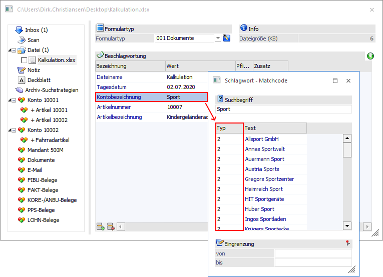
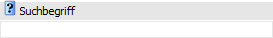
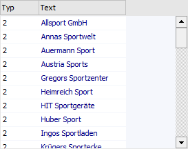
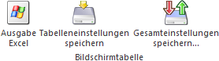
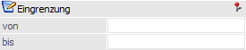

Wenn der Fokus in dem Feld "Wert" eines Archiv-Schlagworts liegt und das Lupen-Symbol bzw. die Taste F9 gedrückt wird, dann öffnet sich das Programm "Schlagwort - Matchcode". An dieser Stelle kann, entsprechend der gerade zu erfassenden Beschlagwortung, nach den entsprechenden Elementen gesucht werden.
Beispiel
Wenn die Beschlagwortung für das Schlagwort "002 - Kontobezeichnung" erfasst werden soll, so wird im Matchcode automatisch nach passenden existierenden Beschlagwortungen gesucht.
Hinweis
Wenn in dem Feld "Wert" ein Teil der gesuchten Beschlagwortung eingetragen wurde und die Taste F9 gedrückt wird, dann wird diese Eingabe als Suchbegriff übernommen. Die Suche wird hierbei nicht direkt gestartet.

Suchbegriff

Ø Suchbegriff
Die Auswahl kann durch die Eingabe eines Suchbegriffs eingeschränkt werden. Die Suche erfolgt in dem Feld "Text".
Tabelle "Suchergebnis"

In der Tabelle werden nach Auslösen der Suche (Button "Anzeigen") die gefundenen Beschlagwortungen angezeigt. Per Doppelklick oder Enter-Taste kann der ausgewählte Text anschließend in das Ausgangsfenster übernommen werden.
Hinweis
Wird nur ein passender Datensatz gefunden, dann wird dieser sofort in das Ausgangsfenster übernommen, ohne dass die Selektion nochmals bestätigt werden muss.
Tabellenbuttons

Ø Ausgabe Excel
Durch Anwahl des Buttons "Ausgabe Excel" wird der Inhalt der Tabelle nach Microsoft Excel übergeben.
Ø Tabelleneinstellungen speichern
Die Spalten einer Tabelle können grundsätzlich an beliebige Positionen verschoben, bzw. in der Breite entsprechend angepasst werden. Durch Anwahl des Buttons "Tabelleneinstellungen speichern" werden die Einstellungen benutzerspezifisch gespeichert und bei dem nächsten Aufruf des Programmpunktes wieder vorgeschlagen.
Ø Gesamteinstellungen speichern
Im Gegensatz zu "Tabelleneinstellungen speichern" können mit "Gesamteinstellungen speichern" mehrere Tabellenaufbauten gespeichert und nach Wunsch geladen werden. Zusätzlich werden Sonderfunktionen der Tabelle (z.B. "Spalte gruppieren") ebenfalls bei der Speicherung bedacht.
Eingrenzung

Ø Eingrenzung von / bis
An dieser Stelle kann ein Werte-Bereich angegeben werden, in welche die Suche stattfinden soll.
Buttons
Ø Anzeigen
Durch Anwahl des Buttons "Anzeigen" bzw. der Taste F5 wird die Suche neu gestartet und der Inhalt der Tabelle neu aufgebaut.
Ø Ende
Mit Hilfe des Buttons "Ende" bzw. der Taste ESC wird das Fenster geschlossen.
Ø Kontenmatch
Über diesen Button kann zusätzlich der Kontenmatchcode aufgerufen werden.
Ø Artikelmatch
Über den Button "Artikelmatch" kann zusätzlich der Artikelmatchcode aufgerufen werden.